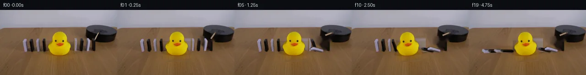

![首帧]()

Round 00
2026-11-05T01:38:57.799732+00:00像素候选变化代码 +250/−0inspection 更新
pixels fdd343b27b2dac1f · code 7abf3482eddfecdf
查看本轮 generate.py 真实 diff
--- previous/generate.py
+++ current/generate.py
@@ -0,0 +1,250 @@
+#!/usr/bin/env python3
+"""Generate the 20-frame PixelWorld continuation using local pixel operations."""
+
+from pathlib import Path
+import math
+
+import cv2
+import numpy as np
+from PIL import Image, ImageDraw, ImageFilter, ImageFont
+
+import artifact_io
+
+
+ROOT = Path(__file__).resolve().parent
+W, H = 256, 144
+
+
+def polygon_mask(points, blur=0.55):
+ """Antialiased polygon mask at source resolution."""
+ scale = 4
+ im = Image.new("L", (W * scale, H * scale), 0)
+ ImageDraw.Draw(im).polygon([(x * scale, y * scale) for x, y in points], fill=255)
+ im = im.resize((W, H), Image.Resampling.LANCZOS)
+ if blur:
+ im = im.filter(ImageFilter.GaussianBlur(blur))
+ return np.asarray(im, dtype=np.uint8)
+
+
+def duck_mask(source):
+ """Extract the connected duck silhouette, seeded from its yellow pixels."""
+ r, g, b = [source[:, :, i] for i in range(3)]
+ yellow = (r > 130) & (g > 75) & (b < 95) & ((r.astype(int) - b.astype(int)) > 75)
+ gc = np.full((H, W), cv2.GC_BGD, np.uint8)
+ gc[44:111, 99:160] = cv2.GC_PR_BGD
+ gc[yellow] = cv2.GC_FGD
+ bgd = np.zeros((1, 65), np.float64)
+ fgd = np.zeros((1, 65), np.float64)
+ cv2.setRNGSeed(7)
+ cv2.grabCut(cv2.cvtColor(source, cv2.COLOR_RGB2BGR), gc, None, bgd, fgd, 6, cv2.GC_INIT_WITH_MASK)
+ raw = np.isin(gc, (cv2.GC_FGD, cv2.GC_PR_FGD)).astype(np.uint8)
+ raw[:44] = 0
+ raw[111:] = 0
+ raw[:, :99] = 0
+ raw[:, 160:] = 0
+ # Retain the largest component and close tiny holes so the eye/beak remain source pixels.
+ count, labels, stats, _ = cv2.connectedComponentsWithStats(raw, 8)
+ keep = 1 + np.argmax(stats[1:, cv2.CC_STAT_AREA])
+ solid = (labels == keep).astype(np.uint8) * 255
+ solid = cv2.morphologyEx(solid, cv2.MORPH_CLOSE, np.ones((5, 5), np.uint8))
+ return cv2.GaussianBlur(solid, (0, 0), 0.65)
+
+
+def make_clean_plate(source, removal_mask):
+ """Remove moving objects using only neighboring pixels from the source."""
+ # Telea works well for the narrow dominoes and rod.
+ expanded = cv2.dilate((removal_mask > 5).astype(np.uint8) * 255, np.ones((7, 7), np.uint8), 1)
+ plate = cv2.inpaint(cv2.cvtColor(source, cv2.COLOR_RGB2BGR), expanded, 5, cv2.INPAINT_TELEA)
+ plate = cv2.cvtColor(plate, cv2.COLOR_BGR2RGB)
+
+ # The duck is wider than an inpaint radius. Reconstruct its table patch row-by-row
+ # from the nearest unobscured samples, with a small deterministic wood-grain term.
+ duck_region = expanded.astype(bool)
+ for y in range(40, 115):
+ xs = np.flatnonzero(duck_region[y, 96:162]) + 96
+ if not len(xs):
+ continue
+ lo, hi = int(xs.min()), int(xs.max())
+ left = source[y, max(0, lo - 8):lo]
+ right = source[y, hi + 1:min(W, hi + 9)]
+ # Median boundary colors avoid borrowing a domino edge.
+ lc = np.median(left, axis=0) if len(left) else plate[y, lo]
+ rc = np.median(right, axis=0) if len(right) else plate[y, hi]
+ for x in range(lo, hi + 1):
+ u = (x - lo + 1) / (hi - lo + 2)
+ base = (1.0 - u) * lc + u * rc
+ grain = 1.5 * math.sin(0.17 * x + 0.31 * y) + 0.7 * math.sin(0.43 * x - 0.11 * y)
+ plate[y, x] = np.clip(base + grain, 0, 255)
+ return plate
+
+
+def affine_about(pivot, angle_deg, tx=0.0, ty=0.0, scale=1.0):
+ mat = cv2.getRotationMatrix2D(tuple(map(float, pivot)), float(angle_deg), float(scale))
+ mat[0, 2] += tx
+ mat[1, 2] += ty
+ return mat
+
+
… diff truncated; 163 more lines …